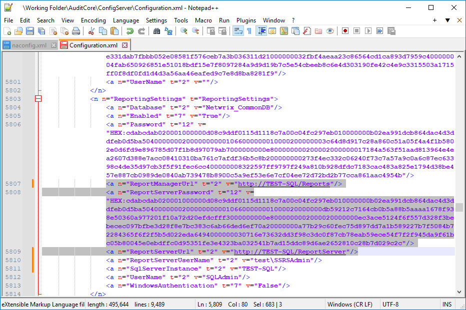

Symptom
-
Netwrix Auditor is unable to connect to Report Server URL or Report Manager URL.
-
Both URLs are accessible via browser.
Cause
In case Netwrix Auditor was previously migrated, Report URLs could get stuck in the configuration file.
Resolution
Review the configuration file to find out whether the ReportManagerUrl and
ReportServerUrl fields contain values other than required.
-
Stop the NA Configuration Server Service in Auditor server. You can run the following line in elevated PowerShell:
Stop-Service -DisplayName "Netwrix Auditor Configuration Server Service" -
Locate and back up the
configuration.xmlfile. Refer to the following path:%Working_Folder%\AuditCore\ConfigServer\ -
In the configuration file, locate the
ReportManagerUrlandReportServerUrlsubnodes. Review the subnode values and edit them, if required. -
Save the changes.
-
Start the NA Configuration Server Service in Auditor server. You can run the following line in elevated PowerShell:
Start-Service -DisplayName "Netwrix Auditor Configuration Server Service"